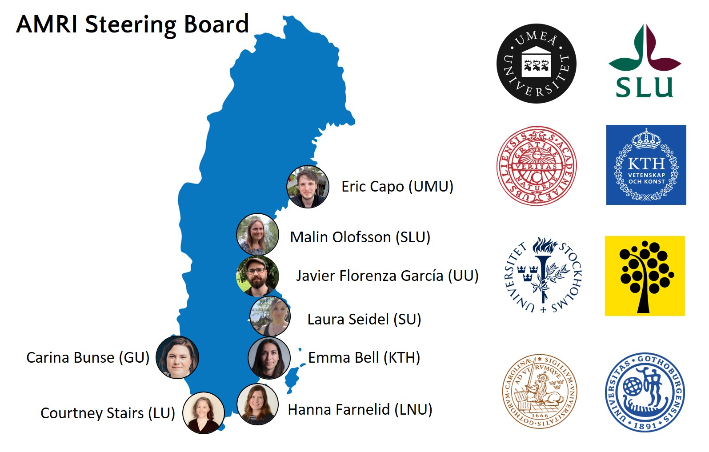

Aquatic Microbiome Research Initiative (AMRI)
The overarching goal of the Aquatic Microbiome Research Initiative-Research Community Program (AMRI-RCP) is to engage leading Swedish researchers with backgrounds in microbial ecology, evolution and geochemistry, in a collaborative effort to advance our understanding of aquatic microorganisms and their functional role in the environment. This multi- and interdisciplinary RCP brings together research groups focused on microbial ecology and water resource management. It is broadly recognized that access to clean water and productive waters to sustain aquaculture and fisheries, is a major challenge for the past, contemporary and future societies. Still, our understanding of the key factors and mechanisms/processes controlling the chemical and biological status of natural water resources is incomplete. For instance, the role of microorganisms in improving and/or compromising the chemical status of waters, in mediating cycling of bioactive elements and ecological and evolutionary mechanisms that enable microorganisms to spread and adapt to a changing environment are yet to be fully elucidated.
In light of recent advances in the field of aquatic microbial research and the combined expertise within the RCP, we now have an unprecedented opportunity to bridge this knowledge gap by more extensively engaging with SciLifeLab and Swedish University infrastructures in large-scale collaborative environmental genomics and other state of the art bio-molecular and chemical imaging analyses. Only very recently have such methods been put to use for cultivation-independent reconstruction and large-scale analyses of metabolic properties, biogeochemical functions, elemental cycling, and overall emerging traits of complex communities and ecosystems. By coordinating and coupling national leaders in this rapidly developing research area with complementary experts in isotope tracer methodology and measurements, geochemistry and metabolic ecosystem modelling, we will form a national and international platform for advances in microbial ecosystem science. This research will also augment and revitalize aquatic resource management to take microorganisms into full consideration in evaluating ecosystem services and environmental quality assessment.
here
